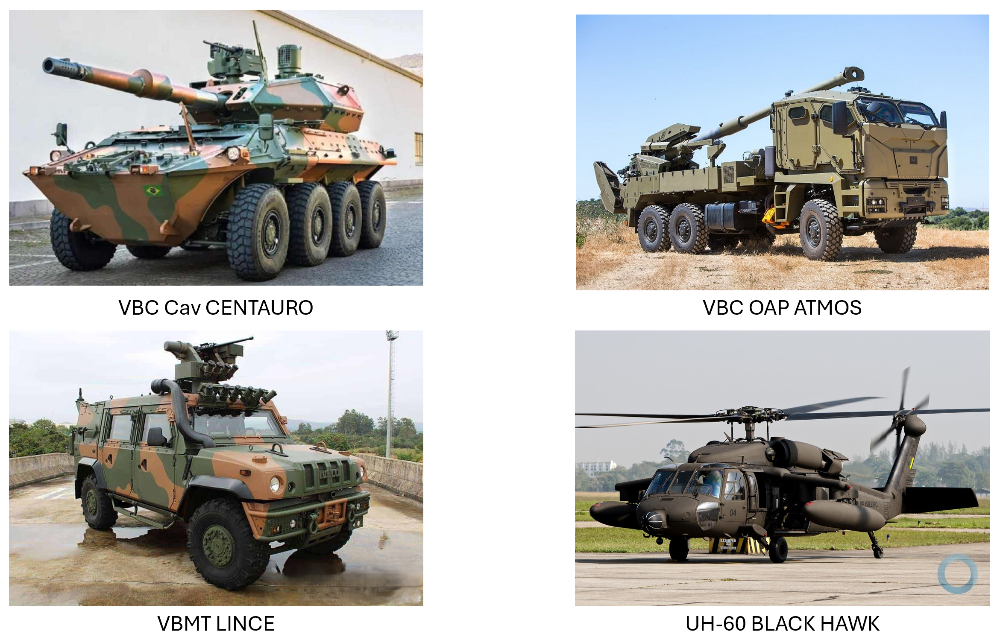

Escolher em disputa
A Administração define as regras de participação e julgamento e demonstra como a proposta selecionada as atendeu. O edital, os registros da disputa e a decisão final tornam a escolha verificável.
INTRODUÇÃO
Da necessidade militar ao contrato, cada documento registra uma decisão sobre a solução. Explore como os estudos, as evidências de mercado e os riscos orientam a escolha da rota e ganham forma no edital e nas obrigações das partes.
SISTEMAS COMPLEXOS · VISÃO INTEGRADA

A capacidade pretendida, os critérios de classificação e o alcance da solução.
BLOCO 1 · Objeto e solução
Mesmo quando um sistema já é produzido em série, incorporá-lo à Força exige definir como integrá-lo, operá-lo e sustentá-lo.
Uma viatura pode atender aos requisitos de mobilidade e ainda depender de ferramentas especiais, treinamento e peças cuja entrega levará meses. Comparar apenas o preço das viaturas deixaria de fora diferenças que determinam quando a capacidade estará disponível. A equipe precisa comparar o que cada configuração entrega durante o ciclo de vida.
Sistema
O núcleo da solução reúne a plataforma, os subsistemas e suas interfaces. Requisitos de desempenho e compatibilidade passam do estudo de viabilidade ao ETP. O TR especifica a configuração e descreve como serão verificados os requisitos no recebimento.
Suporte
Manutenção, sobressalentes, treinamento e publicações técnicas compõem o suporte logístico integrado. O ETP compara alternativas de sustentação. O TR fixa entregas e níveis de serviço, e a minuta distribui responsabilidades pelo apoio.
Compensação
Quando cabível, a compensação exige definir beneficiários, objetivos, obrigações e meios de comprovação. O planejamento articula os compromissos de offset ao fornecimento principal e às regras específicas de defesa.
Financiamento
Havendo financiamento, as condições de crédito, desembolso e pagamento precisam ser compatíveis com os marcos do fornecimento. A instrução identifica o instrumento financeiro, as competências e os recursos correspondentes.
Base · EB10-IG-01.018, arts. 18 e 43. Lei nº 14.133/2021, arts. 6º, XXIII, e 26, § 6º.
BLOCO 1 · Objeto e solução
A finalidade militar, o enquadramento jurídico e a maturidade orientam decisões diferentes. Cada conclusão precisa aparecer na peça em que será usada.
MEM designa o material de emprego militar. As instruções do Exército tratam dos sistemas e materiais de emprego militar (SMEM), incluindo meios característicos ou de uso privativo das Forças Armadas, seus sobressalentes e acessórios. A análise do sistema identifica os componentes e as interfaces necessários à função militar.
Nos artefatos. A necessidade operacional define a capacidade. Os requisitos e o EV descrevem como verificá-la e quais relações com outros sistemas afetam a obtenção.
PRODE é o bem, serviço, obra ou informação empregado nas atividades finalísticas de defesa. Um SD reúne produtos de defesa que interagem para atender a uma finalidade. O PED é um PRODE de interesse estratégico por razões como conteúdo tecnológico, dificuldade de obtenção ou imprescindibilidade.
Nos artefatos. O estudo identifica a categoria aplicável e suas consequências para requisitos, participação, suporte e compensação, com fundamento nos arts. 2º e 3º da Lei nº 12.598/2012.
A heterogeneidade ou complexidade pode impedir a descrição do objeto pelos padrões usuais aplicáveis aos bens e serviços comuns. A classificação como especial exige justificativa prévia das características concretas do objeto.
Nos artefatos. A equipe mostra no ETP quais diferenças técnicas influem no resultado e traduz as necessárias em especificações ou critérios verificáveis. Base legal nos arts. 6º, XIII e XIV, e 18 da Lei nº 14.133/2021.
TRL expressa a prontidão tecnológica. MRL diz respeito à maturidade da produção, incluindo a capacidade de repetir o processo industrial. A tecnologia de um subsistema pode estar comprovada enquanto sua integração à configuração desejada ainda exige avaliação.
Nos artefatos. O EV e o ETP registram evidências de emprego, produção e testes. As lacunas afetam prazos, amostras, aceitação e riscos. A equipe avalia a maturidade compatível com o caso e documenta seus critérios.
BLOCO 1 · Objeto e solução
A equipe identifica o sistema, delimita os bens e serviços necessários ao seu emprego e define como selecionar e contratar o conjunto.
É o sistema ou material cuja avaliação integra finalidade militar, enquadramento administrativo e maturidade tecnológica e produtiva. O estudo identifica os fatores que afetam a escolha e quais evidências permitem compará-los.
Abrange o material e os compromissos necessários à capacidade durante seu ciclo de vida. Pode incluir integração, treinamento, manutenção, compensação e financiamento. A composição varia com a necessidade e as condições da obtenção.
É o processo de escolha fundamentada e de formalização dessa solução, por licitação ou contratação direta quando cabível. O resultado pode envolver vários instrumentos com marcos de entrega e responsabilidades interdependentes.
Enquadramento de sistema de defesa · Lei nº 12.598/2012, art. 2º, III.
O percurso entre a necessidade militar, o planejamento e a escolha juridicamente fundamentada da rota.
BLOCO 2 · Decisão e processo
A concepção orienta o modo de obtenção. A equipe de planejamento revalida a demanda e examina as condições atuais para selecionar e contratar.
GESTÃO DO CICLO DE VIDA
A demanda, quer seja de programas e projetos, quer seja de outros meios, é organizada na concepção. A seleção e contratação viabilizam a obtenção. O ciclo de vida conecta essas atividades no tempo.
A demanda inicial orienta a concepção e a análise de viabilidade. As diretrizes do programa estabelecem o contexto de atuação.
Reuniões decisórias, diretrizes, Elementos Definidores do Sistema e Estudo de Viabilidade estruturam a concepção e o prosseguimento.
É aqui que a fase preparatória, a seleção e a contratação se articulam. O planejamento considera os efeitos da escolha durante todo o ciclo de vida.
Produção, operação e apoio fazem parte do ciclo de vida. A aquisição deve considerar a continuidade da utilização e do suporte à solução.
O desfazimento completa a trajetória do sistema ou material. A perspectiva de ciclo de vida abrange início, meio e fim.
Podem ter uma ou mais entregas de MEM e SMEM, com GCV distintos, a fim de atender aos seus objetos.
Explore as rotas da reunião decisória inicial. As condições para dispensar ou realizar os estudos mudam conforme o caminho.
FASE DE PRÉ-CONCEPÇÃO
FASE DE CONCEPÇÃO
A Diretriz de Obtenção pode dispensar os Elementos Definidores do Sistema e o Estudo de Viabilidade.
A Diretriz de Concepção não dispensa os Elementos Definidores do Sistema nem o Estudo de Viabilidade.
A RDI também pode concluir pelo encerramento. Nesse caminho, o fluxo não avança à obtenção.
FASE DE OBTENÇÃO
O programa ou projeto identifica a capacidade a recompor ou ampliar. A demanda, as necessidades operacionais gerais e a pesquisa preliminar levam o problema à reunião decisória inicial.
Quando a concepção prossegue, a Diretriz de Concepção orienta os requisitos e o estudo de viabilidade. A reunião decisória examina esses elementos e pode determinar o prosseguimento por meio da Diretriz de Obtenção.
A Diretriz de Obtenção orienta o prosseguimento. Para a aquisição de prateleira, o percurso se desdobra nas duas fases abaixo.
A equipe revalida o mercado e os custos, analisa riscos e fundamenta a rota. O ETP e as peças técnicas cabíveis sustentam a definição do objeto, a minuta do edital ou a instrução da contratação direta.
Na licitação, o edital abre a disputa e as propostas, atas e decisões registram a seleção. No diálogo competitivo, as reuniões documentadas separam o edital inicial do competitivo. Na contratação direta, a escolha e o preço sustentam a autorização. O ajuste formalizado recebe a publicidade aplicável.
BLOCO 2 · Decisão e processo
A seleção da VBC Cav MSR 8×8 antecedeu a da VBC OAP 155 mm SR. Nos dois casos, o Exército comparou soluções antes de definir a contratação.
Uma origem na logística de aquisição. A pesquisa de mercado conecta a demanda à escolha entre P&D e prateleira, considerando COTS, MOTS e GOTS. Essa abordagem é descrita no Department of Defense Handbook — Acquisition Logistics.
O rito ad hoc nasce da impossibilidade de a Lei nº 8.666/1993 suprir as necessidades de:
Que modalidade ou hipótese sustenta a seleção? Qual critério organiza o julgamento? A nomenclatura internacional precisa corresponder a um instituto jurídico aplicável.
Em que momentos ocorrem os atos decisórios e quem responde por eles? A sequência utilizada precisa ser compatível com o rito escolhido.
Há possibilidade de registro de preços? Em que condições o processo pode começar e qual é a relação com a disponibilidade orçamentária?
Qual compromisso decorre da seleção? O efeito da decisão deve ser compreendido dentro da modelagem e das condições concretas.
A prática internacional precisa de enquadramento jurídico nacional atualizado.
INSTRUMENTOS E CORRESPONDÊNCIAS
Consulte a pergunta de cada instrumento, sua aplicação na seleção da VBC OAP e os procedimentos brasileiros que podem cumprir função semelhante.
| Instrumento | Pergunta dirigida ao mercado | Aplicação na modelagem | Função e correspondência no Brasil |
|---|---|---|---|
| RFI · Request for Information | Que soluções e capacidades existem? | A prospecção informa o levantamento de mercado, os requisitos e os estudos. | Ouvir o mercadoConsulta pública · Audiência pública · PMIA coleta de informações pode apoiar a consulta pública, a audiência pública e o Procedimento de Manifestação de Interesse (PMI), conforme a finalidade e os requisitos de cada instrumento. |
| RFQ · Request for Quotation | Em que condições e por qual ordem de valor? | Cotações podem integrar a pesquisa de preços após exame do escopo e da comparabilidade. | Conhecer preçosPesquisa de preços · Cotação · Dispensa eletrônicaA consulta de preços pode integrar a pesquisa de preços, a cotação eletrônica e o sistema de dispensa eletrônica, quando aplicável. |
| RFP · Request for Proposal | Que solução técnica e comercial é proposta? | A função de solicitar e comparar propostas precisa ser enquadrada na modalidade e nas regras brasileiras aplicáveis. | Examinar propostasConcorrência · Diálogo Competitivo(ambos com técnica e preço) A comparação técnica e comercial das propostas pode subsidiar uma concorrência por técnica e preço. Quando a solução precisa ser construída com os participantes, essa função pode integrar a pré-seleção e o diálogo, observados os requisitos do art. 32 da Lei nº 14.133/2021. |
| RFT · Request for Tender e BAFO | Quais ofertas serão avaliadas na etapa final? | Na seleção da VBC OAP houve solicitação de oferta final e classificação. A correspondência depende do momento, da vinculação e dos limites de negociação do rito adotado. | Organizar a competiçãoConcorrência · Diálogo Competitivo(forte em menor preço ou maior desconto) A solicitação de ofertas finais organiza a disputa segundo o critério divulgado. No modelo brasileiro, a comparação pode ocorrer na concorrência ou na fase competitiva do diálogo. A BAFO identifica a oferta final do caso estudado. |
As três rotas aproveitam as informações do mercado em momentos diferentes. O diálogo competitivo integra a construção da solução à disputa. A concorrência utiliza instrução ampliada antes do edital. A contratação direta exige hipótese legal demonstrada e decisão instruída.
Base histórica · EB40-IR-20.001, aprovada pela Portaria COLOG/C Ex nº 6/2023. Lei nº 14.133/2021, art. 28, § 2º.
BLOCO 2 · Decisão e processo
Orçamento, tecnologia, normas, disponibilidade de recursos e riscos podem mudar. Os estudos atualizados sustentam a escolha da solução e da modelagem.
Aderência normativa e segurança jurídica
Risco da escolha da solução do SMEM complexo e do rito processual
O modelo é fixado pela Diretriz de Obtenção ainda no início da concepção. Há maior distância entre a escolha e os estudos atualizados da fase preparatória.
A modelagem processual é definida ao final da concepção, após o EV e com base nos EDS, por meio da Diretriz de Obtenção. Fatores supervenientes podem fragilizar a decisão até a fase preparatória.
Quando a Diretriz de Obtenção não definir o modelo de seleção e contratação, a escolha deve ser fundamentada no ETP, à luz de estudos atualizados.
O EV deve abranger, tanto quanto possível, o conteúdo de um ETP, sem substituí-lo. Essa relação está no art. 18, §§ 2º e 3º, das EB10-IG-01.018, aprovadas pela Portaria – C Ex nº 2.152/2024.
É elaborado no momento da aquisição. A fase preparatória considera aspectos técnicos, mercadológicos e de gestão, com a perspectiva de todo o ciclo de vida.
O art. 18, incisos I a VI, da Lei nº 14.133/2021 exige que o planejamento articule a necessidade, a definição do objeto, as condições de execução e pagamento, o orçamento estimado, o edital e a minuta contratual, quando necessária.
Os incisos VII e VIII do mesmo artigo abrangem o regime de fornecimento e a combinação entre modalidade, critério de julgamento e modo de disputa, para selecionar a proposta apta ao resultado mais vantajoso ao longo do ciclo de vida.
Primeiro, compreender a solução.
Depois, fundamentar o rito processual.
BLOCO 2 · Decisão e processo
A Constituição estabelece a licitação como regra e reserva à legislação as hipóteses de contratação direta.
A Administração define as regras de participação e julgamento e demonstra como a proposta selecionada as atendeu. O edital, os registros da disputa e a decisão final tornam a escolha verificável.
A instrução identifica por que a competição é inviável para a necessidade caracterizada. Os documentos precisam sustentar o fundamento invocado, a escolha do contratado e a compatibilidade do preço.
A decisão depende de hipótese expressa e de suas condições. Em defesa, por exemplo, o enquadramento por padronização ou por acordo internacional exige as provas e autorizações pertinentes ao dispositivo aplicável.
Base · Constituição Federal, art. 37, XXI. Lei nº 14.133/2021, arts. 72, 74 e 75.
Consulte as fichas e acompanhe como cada rota transforma estudos em regras e obrigações.
BLOCO 3 · Artefatos e rotas
Abra uma ficha para consultar sua finalidade, quem participa da elaboração, o fundamento e as peças que dela dependem.
DFD
A área requisitante explicita a lacuna operacional, o resultado esperado, a quantidade estimada e o prazo. A demanda permite conferir se a proposta de obtenção continua ligada à missão ao longo dos estudos.
Documentos relacionados
EDS · EV
Os elementos definidores do sistema reúnem requisitos operacionais, técnicos, industriais e logísticos. O estudo de viabilidade examina alternativas de obtenção, custos do ciclo de vida, maturidade, apoio e riscos. Um requisito de disponibilidade, por exemplo, repercute na dotação de sobressalentes.
Documentos relacionados
ETP
Compara alternativas com dados de mercado, quantidades, custos, suporte, riscos e resultados esperados. Explicita as evidências que levaram à escolha do tipo de solução, as incertezas remanescentes e a viabilidade da contratação.
Documentos relacionados
Contribuições escritas
A Administração identifica os pontos em consulta, disponibiliza os elementos da futura licitação e fixa prazo para sugestões. O processo reúne o aviso, a versão submetida, as contribuições e a análise das alterações acolhidas ou rejeitadas.
Documentos relacionados
Sessão de participação
A convocação indica objeto, data e forma de participação. Para a futura licitação, os elementos pertinentes são disponibilizados previamente. A ata ou memória da sessão e a apreciação das contribuições mostram quais sugestões influenciaram a solução.
Documentos relacionados
PMI
O edital de chamamento estabelece o problema e as condições para estudos, levantamentos, investigações ou projetos. A Administração documenta os trabalhos recebidos e fundamenta a aceitação dos que atendem às suas necessidades.
Documentos relacionados
Licitantes ou bens aptos
O edital identifica objeto, requisitos e dados da futura licitação. Os requerimentos, documentos de habilitação ou evidências de qualidade, decisões e relação pública de pré-qualificados registram a avaliação. O procedimento fica permanentemente aberto à inscrição.
Documentos relacionados
Fontes comparáveis
O relatório identifica o objeto, os responsáveis, as fontes, a série de preços, o método de cálculo e as exclusões justificadas. Registra configurações, quantidades, moedas, datas, fretes, treinamento e garantias para tornar as referências comparáveis.
Documentos relacionados
Valor de referência
Consolida quantidades, preços referenciais e composições de custo da solução definida. A memória permite localizar as fontes de cada parcela e os efeitos de prazo, entrega e riscos assumidos. O custo de ciclo de vida pode informar comparações além do valor contratado.
Documentos relacionados
Gestão do processo
Documenta eventos, causas, consequências, probabilidade, impacto e respostas. Identifica responsáveis e prazos. Atrasos na preparação de pessoal ou na infraestrutura de recebimento podem comprometer a operação mesmo com o material entregue no prazo.
Documentos relacionados
Encargos entre as partes
Especifica os eventos previsíveis, a distribuição de responsabilidades, os efeitos econômicos e as medidas de prevenção e mitigação. Permite aos participantes precificar suas obrigações e às partes apreciar pedidos de recomposição durante a execução.
Documentos relacionados
TR
Define objeto, quantidades, requisitos, solução completa, execução, gestão, medição, pagamento, seleção e estimativas. Nos sistemas militares, conecta desempenho e interfaces a entregas verificáveis de peças, treinamento, documentação e assistência.
Documentos relacionados
Regras da seleção
Estabelece objeto, condições de participação, habilitação, julgamento, recursos e regras da contratação. Os critérios de avaliação, evidências aceitas, pesos e tratamento das propostas precisam ser conhecidos pelos participantes no momento devido.
Documentos relacionados
Juízo especializado
Examinam requisitos, integração, produção, sustentação, testes ou adequação dos estudos. Identificam a pergunta submetida, o método, os documentos examinados, o resultado e as limitações da avaliação.
Documentos relacionados
Compatibilidade dos recursos
Relaciona despesas de fornecimento e suporte, créditos, cronograma físico-financeiro, condições de pagamento e compromissos futuros. Diferencia o valor estimado da contratação da disponibilidade para assumir a despesa.
Documentos relacionados
Controle prévio de legalidade
Examina a base legal, a competência, o procedimento, as exigências do edital e a minuta contratual. A análise indica questões jurídicas a sanar. A equipe registra os ajustes ou a motivação da decisão subsequente.
Documentos relacionados
Instrução da contratação direta
A instrução relaciona os fatos aos pressupostos de dispensa ou inexigibilidade. Demonstra a adequação da solução, a razão da escolha do contratado e sua habilitação e qualificação mínima. Junta as provas próprias da hipótese invocada.
Documentos relacionados
Proposta do contratado
Confronta o valor oferecido e as condições da proposta com referências idôneas e comparáveis. Explica diferenças de quantidade, configuração, data, moeda e suporte. Na impossibilidade de estimar pelas fontes ordinárias, documenta a comprovação alternativa admitida.
Documentos relacionados
Registro da disputa
Atas, gravações exigíveis, pareceres de avaliação, registros de julgamento, habilitação e decisões sobre recursos documentam o caminho até o resultado. Os atos de adjudicação e homologação identificam o desfecho da seleção quando o processo prossegue.
Documentos relacionados
Decisão da autoridade
A autoridade examina o processo instruído e formaliza a autorização. O ato autorizativo ou o extrato decorrente do contrato é divulgado em sítio eletrônico oficial. A divulgação contratual observa o regime aplicável.
Documentos relacionados
Formalização e execução
A minuta organiza objeto, entregas, prazos, garantias, recebimento, pagamentos, responsabilidades, riscos e fiscalização. O instrumento assinado incorpora o resultado da seleção ou as condições autorizadas na contratação direta.
Documentos relacionados
BLOCO 3 · Artefatos e rotas
As diretrizes e os estudos dão base à obtenção. O ETP conclui a análise da solução e da modelagem processual na fase preparatória.
Sem fixar antecipadamente solução ou modelagem.
Demanda inicial para concepção e viabilidade.
Estudo de Viabilidade.
Prosseguimento para SMEM de prateleira, sem fixar antecipadamente solução específica ou modelagem.
O ETP sustenta a escolha da solução e da rota de contratação.
Explore as três modelagens. Cada caminho traz condições próprias de seleção e contratação.
Formação do conjunto de participantes.
As atas e gravações registram como a solução foi construída.
Disputa a partir da solução definida.
Critério de julgamento: técnica e preço.
Avaliação das propostas.
Verificação das condições de participação.
Atos decisórios do processo.
A escolha entre as três rotas depende das características da solução e do enquadramento jurídico da contratação.
BLOCO 3 · Artefatos e rotas
A adaptação institucional deve ser coerente e sistemática, respeitando os limites do ordenamento superior e aproximando a modelagem da situação concreta.
Estruturação inicial do processo de obtenção.
BLOCO 3 · Artefatos e rotas
Nesta sistemática, o diálogo competitivo é a rota preferencial quando a Administração conhece a necessidade, precisa definir ou refinar a solução com os participantes e demonstra o cabimento do art. 32.
Caracterizar a necessidade militar, as exigências já definidas e as dúvidas que justificam o diálogo. Documentar a escolha da modalidade e a designação da comissão. Estudos e consultas anteriores podem ajudar a formular o problema.
O edital inicial apresenta a necessidade e os critérios objetivos de pré-seleção. A comissão examina os documentos e registra os participantes admitidos. Essa seleção própria da modalidade cumpre a função de ingresso no diálogo.
As reuniões com os participantes pré-selecionados exploram configurações, integração, sustentação e condições contratuais. Atas e gravações em áudio e vídeo registram as reuniões. A comissão preserva informações sigilosas e observa o consentimento exigido para revelar soluções de um participante aos demais.
Encerrar motivadamente o diálogo e juntar os registros. Ao prosseguir, especificar a solução e publicar o edital da fase competitiva com critérios objetivos. A definição resultante sustenta o TR, a estimativa e as condições contratuais.
Avaliar as propostas pelos critérios divulgados, documentar as decisões e apreciar os recursos. Concluídos os atos cabíveis, a adjudicação e a homologação antecedem a formalização do ajuste.
BLOCO 3 · Artefatos e rotas
Rota indicada quando há condições de consolidar a especificação antes do edital e quando diferenças técnicas justificam uma avaliação ponderada com o preço.
Nesta rota, a interação ocorre antes da disputa. Consulta e audiência recolhem contribuições sobre requisitos, riscos e minutas. O PMI atende à finalidade específica de obter estudos de soluções inovadoras quando cabível. A equipe identifica no ETP quais contribuições incorporou e por quê.
A segunda rota inclui pré-qualificação para aferir previamente condições de licitantes ou qualidade de bens. Seu procedimento produz edital, registros de exame e resultado divulgado. A lei permite a restrição da futura licitação nos termos do art. 80, § 10.
Consolidar TR, memória de preços, riscos, requisitos mínimos, quesitos de pontuação, pesos e metodologia de julgamento. Um método multicritério pode auxiliar a avaliação quando sua aplicação respeita o critério legal e as regras do edital.
Registrar a avaliação técnica pela banca competente, a nota de preço e a ponderação. O modo aberto é vedado com técnica e preço. Na ordem comum, o julgamento antecede a habilitação. A inversão requer ato motivado com benefícios demonstrados e previsão no edital.
Apreciar recursos, encaminhar o processo à autoridade competente e registrar o desfecho. As condições de entrega, de aceitação e de suporte da solução selecionada vinculam sua formalização.
Base · Lei nº 14.133/2021, arts. 17, 28, 33, IV, 36, 37, 56, § 2º, e 78 a 81. IN SEGES/MGI nº 2/2023. A pré-qualificação integra a sequência adotada nesta modelagem. Seu uso em outras concorrências depende das condições de cada contratação.
BLOCO 3 · Artefatos e rotas
Na terceira rota, o esforço de instrução concentra-se em demonstrar por que a solução atende à necessidade e quais fatos autorizam a escolha daquele contratado.
Revisar os estudos da concepção, formalizar a demanda e testar as premissas técnicas e econômicas diante das condições atuais. Nesta rota, a equipe também consulta o mercado para verificar disponibilidade, condições de fornecimento e preços. A finalidade e o cabimento orientam a escolha dos instrumentos de consulta ou prospecção.
Identificar a hipótese de dispensa ou a inviabilidade de competição. Confrontar seus pressupostos com as evidências, demonstrar a qualificação mínima e motivar a escolha. Na modelagem proposta, essa instrução dispensa uma pré-qualificação voltada a futura disputa.
Documentar estimativa de despesa e justificativa de preço, compatibilidade orçamentária, condições de execução e peças técnicas cabíveis. Submeter a instrução ao controle jurídico pertinente.
A autoridade decide com base nas peças do art. 72. Registrar autorização, publicidade e instrumento contratual aplicável. Os responsáveis acompanham os marcos de entrega e a execução das obrigações.
BLOCO 3 · Artefatos e rotas
O mapa acompanha a gestão do risco. A matriz estabelece a distribuição contratual de suas consequências. Um documento conjunto deve permitir identificar as duas funções.
| Aspecto | Mapa de riscos | Matriz de alocação |
|---|---|---|
| Pergunta | Qual evento ameaça o cronograma de entrada em operação e como reduzir o impacto? | Se o evento ocorrer após a contratação, quais efeitos competem a cada parte? |
| Informações | Etapa afetada, causa, probabilidade, impacto, resposta, responsável e prazo para agir. | Evento delimitado, obrigações de cada parte, distribuição dos custos e efeitos sobre prazo e equilíbrio econômico-financeiro. |
| Aplicação ao exemplo | A equipe identifica a dependência de licença de exportação, acompanha o pedido e programa estoque inicial para o período crítico. | A minuta distingue atraso imputável ao fornecedor de evento superveniente fora de seu controle. Especifica quem providencia documentos, como comunicar o evento e quais efeitos contratuais cabem em cada hipótese. |
| Uso posterior | A fiscalização atualiza a situação e aciona a resposta programada. | Gestor e partes consultam a cláusula diante de pedidos de prorrogação, revisão ou outras providências. |
A análise de riscos da fase preparatória tem fundamento no art. 18, X. A matriz de alocação tem disciplina própria nos arts. 22 e 103. Sua obrigatoriedade legal no edital depende das hipóteses do art. 22, § 3º. A alocação também pode repercutir no orçamento e nos preços ofertados.
BLOCO 3 · Artefatos e rotas
Uma cotação para a plataforma e outra que inclui cinco anos de suporte podem aparentar grande diferença mesmo quando os preços dos componentes são semelhantes.
Reunir dados obtidos nas fontes admitidas. A pesquisa pode aproveitar informações colhidas em audiência, consulta, PMI ou solicitação de cotação, desde que documentadas e examinadas nas condições do art. 23 e da regulamentação aplicável.
Registrar quantidade, configuração, suporte, data-base, moeda, condições de entrega e pagamentos. Para o exemplo, discriminar as parcelas de plataforma e de apoio. Quando a decomposição segura for inviável, justificar os limites de uso da referência.
Aplicar o método justificado ao conjunto tratado, registrar exclusões e memória de cálculo. Levar o resultado ao orçamento e contrastá-lo com os recursos previstos.
Na contratação direta, demonstrar por que o valor do fornecedor escolhido é aceitável sob as condições pactuadas. Registrar as fontes e a análise específica, inclusive meios alternativos de comprovação quando juridicamente cabíveis.
Base · Lei nº 14.133/2021, arts. 23 e 72, II e VII. IN SEGES/ME nº 65/2021, para bens e serviços em geral no âmbito de sua aplicação.
Efeitos da publicidade, da forma de realização e do âmbito internacional sobre a documentação.
BLOCO 4 · Condições especiais dos processos
Separe o documento necessário à competição dos anexos que contêm informação protegida. O fundamento, a extensão e o momento de acesso precisam estar registrados.
Os interessados precisam conhecer os critérios, as quantidades e as condições para preparar propostas.
A restrição exige fundamento e delimitação dos trechos e dos destinatários.
Lei nº 12.527/2011, arts. 7º, § 2º, e 22 a 28, conforme a hipótese
Quando o orçamento tiver divulgação diferida, a motivação integra o planejamento.
A comissão documenta as reuniões e controla o compartilhamento das soluções apresentadas.
Seleção e formalização · Ao divulgar as peças ou o contrato, aplique o tratamento definido para cada informação e conserve nos autos a versão íntegra e o fundamento da restrição. Art. 91, § 1º.
BLOCO 4 · Condições especiais dos processos
A forma escolhida define como as propostas são recebidas, como o público acompanha os atos e quais registros precisam ser conservados.
O edital orienta o envio das propostas. Os registros do sistema permitem conferir os atos da sessão.
Forma preferencial na regra geral. Na técnica e preço federal, aplica-se a regra da forma eletrônica. Lei nº 14.133/2021, art. 17, § 2º · IN SEGES/MGI nº 2/2023, art. 1º, § 1º.
A autoridade motiva a opção presencial. A ata e a gravação permitem reconstituir a sessão.
Lei nº 14.133/2021, art. 17, §§ 2º e 5º · IN SEGES/MGI nº 2/2023, art. 1º, § 2º.
Avaliação de amostra. O exame físico pode integrar uma licitação eletrônica. O TR descreve o teste e os critérios de aceitação. O edital prevê a avaliação e suas condições. Art. 17, § 3º.
BLOCO 4 · Condições especiais dos processos
O local de processamento, a participação de estrangeiros e o local de execução do objeto são dados distintos na definição das regras.
As condições de participação, execução e comparação das propostas orientam a redação do edital.
Na seleção da VBC OAP, o procedimento foi conduzido no Brasil e alcançou fornecedores estrangeiros. Lei nº 14.133/2021, arts. 6º, XXXV, e 52.
A competência da repartição e as peculiaridades locais orientam a instrução e a formalização do ajuste.
No caso Black Hawk, a demanda instruída no Brasil deu origem à formalização do ajuste FMS pela comissão em Washington. Lei nº 14.133/2021, art. 1º, § 2º · Portaria GM-MD nº 5.175/2021, Anexo II.
CONCLUSÃO
A demanda e os estudos de viabilidade dão às três rotas um ponto de partida comum. Na obtenção, o momento de definir a solução muda: durante o diálogo, antes do edital da concorrência ou na instrução que fundamenta a escolha direta.
| Fase | Diálogo competitivo | Concorrência por técnica e preço | Contratação direta |
|---|---|---|---|
| 01 · Pré-concepçãoNecessidade militar | Formalização da demanda Registrar no DFD a lacuna de capacidade, a prioridade e o horizonte de emprego. As necessidades operacionais e a pesquisa preliminar subsidiam a demanda. | ||
| 02 · ConcepçãoViabilidade | Requisitos e estudo de viabilidade Quando a concepção prossegue, comparar alternativas, suporte e custos. A Diretriz de Obtenção orienta o modo de obter. | ||
| 03 · ObtençãoFase preparatória | Estudo técnico preliminar Orçamento estimado Revalidar a necessidade, examinar o mercado e os riscos, estimar a despesa e justificar a rota. Na contratação direta, elaborar o ETP quando cabível. | ||
| Preparação da seleçãoO que muda por rota | Edital e anexos Justificar o uso do diálogo. Delimitar no edital inicial o problema, as exigências conhecidas e os critérios da pré-seleção. | Pré-qualificação Edital e anexos Nesta modelagem, usar as contribuições do mercado e os resultados da pré-qualificação para fechar o TR e fixar no edital os pesos de técnica e preço. | Enquadramento e escolha do contratado Demonstrar a hipótese legal e reunir elementos de habilitação, preço e recursos disponíveis. |
| SeleçãoFase externa da aquisição | Atas, avaliações e atos de seleção Edital e anexos Registrar em atas e gravações as soluções discutidas. O edital competitivo consolida a especificação e abre o recebimento das propostas finais. | Atas, avaliações e atos de seleção Registrar propostas, notas e classificação conforme os critérios divulgados e verificar a habilitação exigida. | Enquadramento e escolha do contratado Justificativa de preço Fundamentar a escolha do fornecedor e confrontar o preço aceito com as referências. Colher propostas adicionais quando a hipótese previr aviso. |
| DecisãoDesfecho por rota | Atas, avaliações e atos de seleção Comparar as propostas finais e apreciar recursos. Se houver prosseguimento, adjudicar e homologar. | Atas, avaliações e atos de seleção Registrar o resultado ponderado, decidir os recursos e registrar a adjudicação e a homologação quando o procedimento prosseguir. | Autorização e publicidade da direta A autoridade decide com base na instrução. Divulgar o ato autorizativo ou o extrato correspondente. |
| FormalizaçãoContratação | Minutas e instrumentos contratuais Fixar entregas, aceitação e responsabilidades no contrato ou instrumento equivalente cabível. Registrar a divulgação do ajuste conforme o regime aplicável. | ||
Acompanhe um requisito de disponibilidade: o EV identifica o apoio necessário, o TR especifica o prazo de reposição e o contrato define como conferir a entrega. Essa ligação permite rastrear a exigência até sua origem.
Art. 37, XXI · regra de licitação.
Arts. 1º, 6º, 13, 17 a 26, 28, 32, 36, 52 a 56, 71 a 81 e 89 a 103 · planejamento, seleção, procedimentos e contratos.
Referência histórica do procedimento ad hoc.
Arts. 2º e 3º · produtos e sistemas de defesa.
Arts. 31 e 32 · participação no processo administrativo federal.
Acesso à informação e tratamento das restrições de acesso.
Formalização da demanda e plano de contratações anual.
Elaboração dos estudos técnicos preliminares.
Elaboração do termo de referência.
Pesquisa de preços para bens e serviços em geral.
Julgamento por técnica e preço na forma eletrônica.
Regulamentação federal publicada para o diálogo competitivo. Vigência prevista em 30 de novembro de 2026.
Alteração da data de vigência da IN nº 512/2025.
Anexo II · compras do Comando do Exército no exterior.
Item 4.5.5 · distinção entre análise de riscos e matriz contratual.